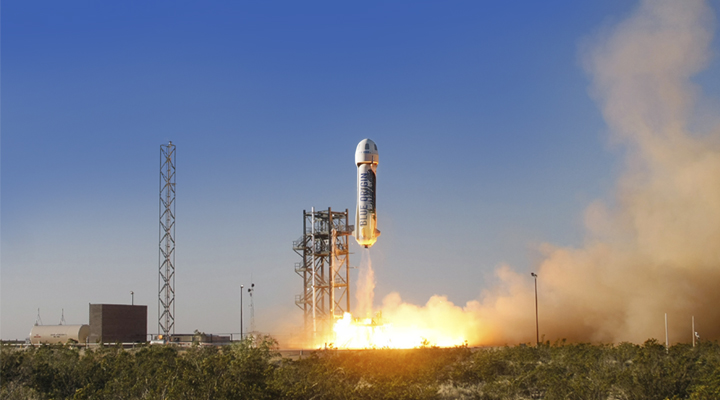

Highlights
Blue Origin
-
Blue Origin's first flight test vehicle, called Charon after Pluto's moon,was powered by four vertically mounted Rolls-Royce Viper Mk. 301 jet engines rather than rockets. Read more... -
Blue Origin Goddard is the name of the first development vehicle in the Blue Origin New Shepard program, which flew for the first time on November 13, 2006. Named after rocketry pioneer Robert Goddard, the vehicle is a subscale demonstrator and flew at a 285 ft altitude during its initial flight. The flight was successful Read more... -

The BE-3 (Blue Engine 3) is a LH2/LOXrocket engine developed by Blue Origin.The engine began development in the early 2010s, and completed acceptance testing in early 2015. Read more... -

The New Shepard reusable launch system is a vertical-takeoff, vertical-landing (VTVL),suborbital manned rocket that is being developed by Blue Origin as a commercial system for suborbital space tourism. Read more...